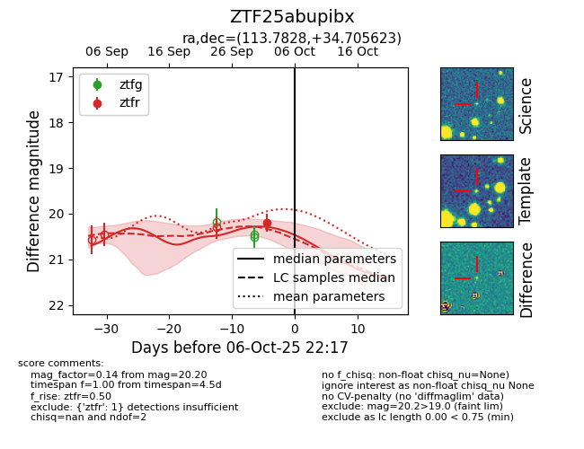
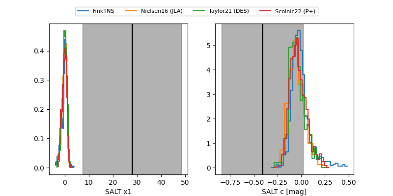

FINK: ZTF25abupibx
Lasair: ZTF25abupibx
ALeRCE: ZTF25abupibx
ZTF25abupibx (ztf,fink)
equatorial (ra, dec) = (113.7828,+34.70562)
galactic (l, b) = (184.5736,+23.46963)


last ztfr=20.20
1 ztfr detections